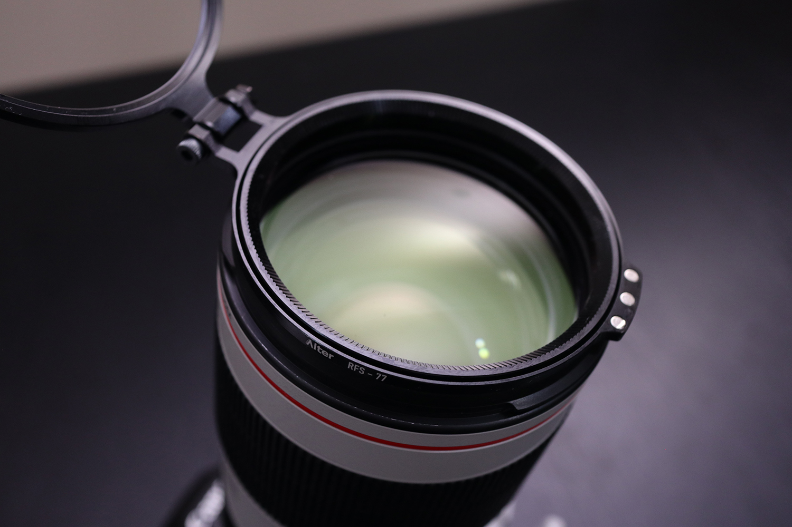

Photography Gadgets That Will Blow
Your Mind
You should try these out.

1. Fujifilm Instax Mini LiPlay Smartphone Printer Camera

Though you probably have your smartphone camera with you everywhere you go, it's not that easy to get photos printed. With the Fujifilm Instax Mini LiPlay Smartphone Printer Camera, however, you can take and print photos instantly. This hybrid camera and printer is compact, so you can keep it in your bag when you're out and about. And because this instant photo printer displays photos on its digital screen, you can print only the best. Furthermore, this device lets you print photos from your smartphone, too, in case you use it to take pictures. This camera uses microSD cards to store up to 850 photos per gigabyte. But if you happen to forget your memory card, you can keep up to 45 images in the camera’s memory.
2. Alter Rapid Hinged-Lens Filter Adapter
The Alter Rapid Filter System Hinged-Lens Filter Adapter gives you speed and convenience when using your lens filters and accessories. Whether you're a novice or expert photographer or videographer, this rapid filter system (RFS) offers all threaded lens and filter diameters. The RFS installs quickly, and you can orient the hinge any way you like. Plus, you can operate this lens accessory with one hand, which makes engaging and disengaging filters a breeze.
3. Insta360 Titan 11K Cinematic VR Camera
Boasting 11K capabilities, this device captures photos and videos that look incredibly realistic. Likewise, Titan shoots at 10K 3D and 11K mono, allowing it to capture every angle simultaneously. It also shoots at 8K at 60 fps. The unibody VR camera comes with eight lenses and Micro Four Thirds sensors, complete with 10-bit color support. Thanks to impressive low-light performance, Titan captures vibrant and clear VR day or night.
4. Sandmarc Film Rig Camera Mounting System

The Sandmarc Film Rig Camera Mounting System ensures that your footage doesn't make viewers motion sick. Whether you're filming your off-roading joyride or your friend's latest halfpipe trick, this iPhone stabilizer will keep your video smooth. Because this DSLR stabilizer works with iPhone, GoPro, and DSLR cameras, you can use it no matter what you have with you. Plus, you can easily take this GoPro stabilizer with you in your bag or backpack as it's fairly compact.
5. Moment Air Anamorphic Drone Accessories

Improve your drone-photography game with the Moment Air Anamorphic Drone Accessories. Including a lens, filter, and case for DJI drones, this collection will give you cinema-quality shots. By providing crisp footage and high-quality light flares, this anamorphic drone lens will make you ready to shoot a movie. Built for the DJI Mavic 2 Pro and Zoom, this lens gives you a wide-angle shot and horizontal flare.